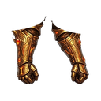

Bakır Eldiven T1
T1Basit bakır eldivenler
İSTATİSTİKLER Normal +0
- Savunma +5
- Can +10
- Düşüren
- Orman Sıçanı Fısıldayan Orman
Mağara Yarasası Karanlık Mağara D1
Basit bakır eldivenler

Demir kavrayışlı eldivenler

Keskin çelik eldivenler

Zarif gümüş eldivenler

Altın dokunuşlu eldivenler

Ağır platin kavrayış

Çevik selestit eldivenler

Ezici eldivenler

Erimiş obsidyen eldivenler

İlahi ejderha pençeleri